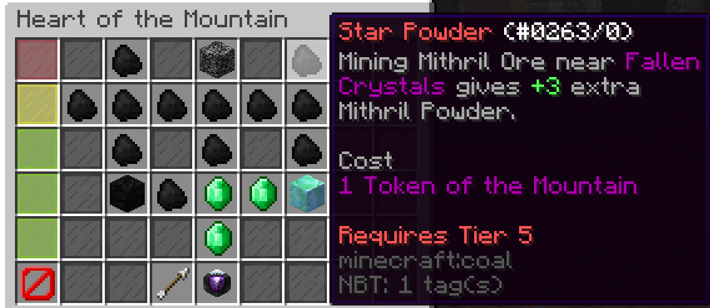
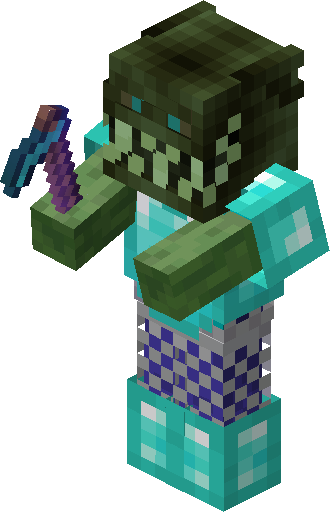

Progress Tracker
Monitor your SkyBlock progression across all major milestones — skills, slayer tiers, dungeon floors, collections, and net worth goals.

Skill Milestones
Track progress toward key skill thresholds: Mining 12 for Dwarven Mines, Combat 12 for The End, Farming 50 for Garden perks, and Fishing 25 for Trophy Fish. Each skill milestone unlocks new content and passive bonuses.

Slayer Progress
Log your Slayer XP across all 6 bosses — Zombie, Spider, Wolf, Enderman, Blaze, and Vampire. Track unlocks, RNG Meter progress, and key item drops. Level 7+ on all slayers is the standard endgame benchmark.
Dungeon Checkpoints
Monitor Catacombs level, floor completion status, and S/S+ run counts. Key targets: F3 for Shadow Assassin grinding, F7 for Necron's Handle, M5 for Terminator viability, and M7 Cata 45+ for endgame Master Mode.